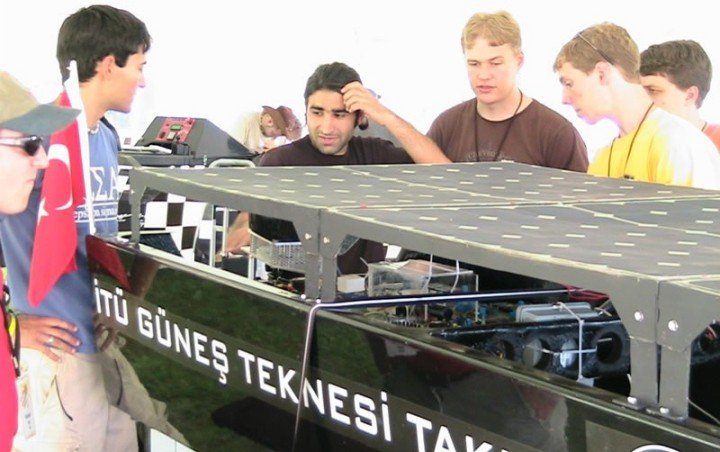
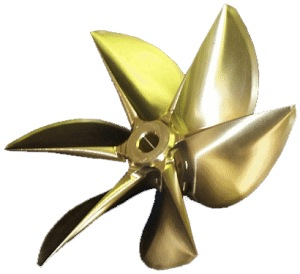
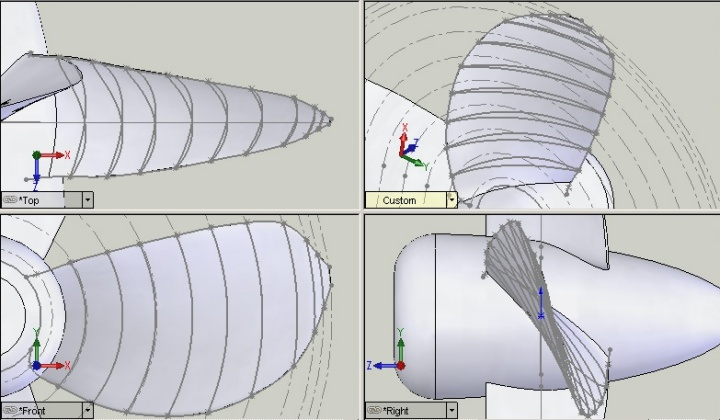
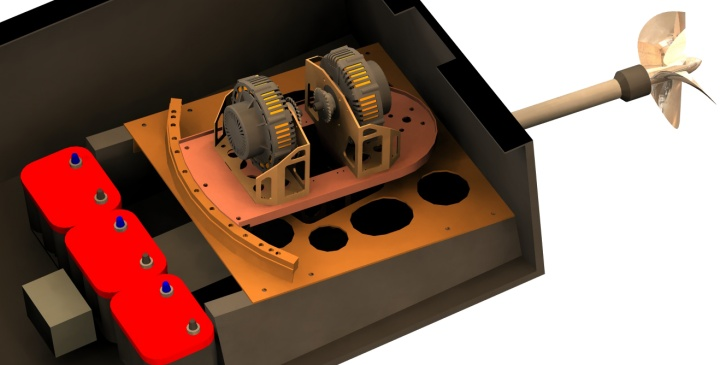

|
Ödülden sonra çeþitli kurum ve kuruluþlardan ne gibi tepkiler geldi?
Yarýþmadaki baþarýmýzdan sonra baþta ABD'de öðrenim görmekte olan öðrencilerden ve çalýþan Türkiye Cumhuriyeti vatandaþlarýndan bizi çok etkileyen mesajlar aldýk. Bunlarýn çoðunu bize yaþattýklarý yoðun duygulardan ötürü gözyaþlarý içinde okuduk.
Bunlar dýþýnda, bizimle ilgili haberleri internette ve gazetelerde okuyan vatandaþlarýmýzdan yine tebrik mesajlarý aldýk. Hatta bizi çok mutlu ettiði için paylaþmak isterim, Cumhurbaþkanýmýz Ahmet Necdet SEZER, rektörümüz Faruk KARADOÐAN'ý arayarak bizim baþarýmýzdan ötürü tebrik etmiþ. Bu haberi aldýðýmýzda yaþamýþ olduðumuz onca stres ve yorgunluk üzerimizden kalktý diyebilirim.
Bunlar dýþýnda bizimle profesyonel anlamda baðlantý kuran firmalar oluyor. Özellikle tanýtým filmimizi izledikten sonra altýndan kalktýðýmýz mühendislik problemlerinin zorluðundan emin oluyor ve kendi bünyelerinde bize görevler vermek istiyorlar. Bu da tabii emeklerimizin boþa gitmediðinin bir baþka göstergesi ve bizi çok sevindiriyor.
Güneþ teknesinin saðladýðý avantajlar nelerdir?
Güneþ enerjisiyle çalýþan araçlar güneþ panelleri sayesinde elektrik üreten, bu elektriði depolayan ve elektrik motorlarýný çevirip bu elektriði tüketen araçlardýr. Elektrik motorlarý, benzin veya dizel yakýtla çalýþan motorlardan farklý olarak herhangi bir yakýta ihtiyaç duymaz ve bir yanma olmadýðý için de çevreye egzoz gazý vermezler. Güneþ enerjisiyle çalýþan teknelerin en büyük avantajý tabi ki yakýt kullanmýyor olmalarý ve egzoz gazý çýkarmýyor olmalarýyla çevreyle barýþýk olmalarýdýr. Bunun yanýnda güneþ tekneleri tamamen ücretsiz olarak hareket ederler. Yeterli boyutlardaki güneþ panelleri ve aküler sayesinde tekne sevk edildiði gibi bunun disindaki, teknenin tum elektrik ihtiyacý güneþten saðlanabilir. Güneþ teknelerinin gürültü kirliliðine karþý da önemli avantajlarý bulunmaktadýr. Sahip olduklarý elektrik motorlarý, fosil yakýt kullanan motorlardaki gibi herhangi bir yakýtýn yakýlmasý veya patlatýlmasý ilkesiyle çalýþmadýðýndan son serece sessiz motorlardýr. Seyir halinde ne çevreyi ne de araç içindekileri rahatsýz etmez..
Aslýna bakýlýrsa bugün, güneþ enerjisi ile çalýþan teknelerin yararlarýný tartýþmak, fizibilitelerini araþtýrmak çok da anlamlý deðil bence, çünkü petrol giderek tükeniyor ve gelecek ancak alternatif enerjiyle þekillendirilebilecek ve malesef alternatif enerji denince elinizde çok fazla seçenek kalmýyor. Güneþ enerjisi, alternatif enerji sistemlerinden üzerine en çok çalýþýlaný.. Ve güneþ enerjisi sistemleri eðer bugün ülkemizde üzerine yoðun olarak çalýþýlan bir konu olursa, ileride ülkemiz, tarihte petrol konusunda kazanamadýðý güce, ileri teknolojisiyle sahip olabilecektir.
Teknenin seri üretime geçirilme düþüncesi var mý? Varsa tüketiciye maliyeti ne þekilde olur? Güneþ enerjisiyle çalýþan arabalarla, güneþ enerjisinin karada kullanýmý yaygýnlaþmadý. Bunu denizde gerçekleþtirmek mümkün mü? (yani gemilerde deðil belki ama teknelerde "yakýt"sýz kullanýmýn yaygýnlaþtýrýlmasý)
Güneþ tekneleri, diðer konvesiyonel teknelere göre daha yüksek bir ilk fiyata sahipler. Ancak bu teknelerin hiç yakýta ihtiyaç duymadan hareket ettiðini ve kýsa bir sürede kendilerini amorti ettiklerini bilmek gerekir..
Güneþ teknelerinin seri olarak imal edilmesi mümkün. Özellikle doðasý ve deniz turizmi ile ünlü olan Türkiye gibi bir ülkede bunun çoktan yapýlmýþ olmasý gerekiyordu bizce. Yurtdýþýnda, tamamen güneþ enerjisi ile çalýþmakta olan feribotlar bile yapýlmýþ bulunuyor. Bizim bu konu ile ilgili bazý giriþimlerimiz oldu ancak ne yazýk ki bu tarz kararlarý verebilecek olan kimseler ülkemizde ileri görüþlü deðiller ve hep birkaç yýllýk planlar yapýyorlar. Alternatif enerji sistemlerine destek vermiyor olmalarýný ÖTV'nin düþmesi ve yakýtý artýk daha ucuza saðlayabiliyor olmalarýna baðlýyorlar. Oysa dünya artýk küresel ýsýnmanýn ne büyük bir felaket olduðunun farkýna varmýþ ve petrolün azalmakta olduðunun bilincinde. Bu yüzden dünyanýn önde gelen petrol firmalarý alternatif enerji konusunda ciddi projeler yapýp, yaptýrýp gelecekte enerji konusundaki karlarýný sürdürebilmeyi planlýyorlar.
Bizce güneþ enerjisiyle çalýþan teknelere ülkemizin çok ihtiyacý var. Ben, bu yaz Akdeniz'e gittiðim zaman, on yýl önce deniz gözlüðümü takýp da gördüðüm balýklara, deniz canlýlarýna artýk rastlayamýyorum... Teknelerin güneþ enerjisine geçiþ süreci, tekne sahiplerinin bilinçlenmesine býrakýlýrsa çok geç kalýnmýþ olacak. Bunun ülkemizin çevre bakanlýðý ve ilgili kuruluþlarýnca konulacak regülasyonlarla kurallara baðlanmasý gerekiyor. Özellikle Dalyan'da Karetta Karetta kaplumbaðalarýnýn varlýðýný korumaya yönelik çalýþmalar yapan bazý tekne sahipleri bize ulaþýyorlar ve teknelerini güneþ enerjisiyle çalýþtýrýp çalýþtýramayacaðýmýzý soruyorlar. Bu tabi ki mümkün ancak az sayýda tekne için çalýþmalar yapmak fiyatlarý yükseltiyor. Öncelikle doðasý ile öne çýkan Akdeniz ve Ege þehirlerimizden baþlanarak güneþ enerjisine geçiþ hýzlandýrýlmalýdýr. Eðer çalýþmalar tekil olarak deðil çok sayýda tekne için yürütülecek olursa bu, maliyetleri çok düþürecektir ve bunun yanýnda elektrik-elektronik, kimya, makina gibi sektörlerde çok ciddi bir istihdam saðlanabilecektir. Düþünsenize, hem doðayý koruyor, hem insanýnýza istihdam saðlýyorsunuz hem de yapýlacak çalýþmalarý destekleyerek dünyanýn teknoloji bakýmýndan sayýlý ülkelerinden biri oluyorsunuz... Büyüklerimizin bu konu üzerine biraz düþünmelerini öneririm...
Dediðim gibi, yurtdýþýnda tüm enerjisini güneþten alarak çalýþan feribotlar yapýldý ve bunun yaygýnlaþtýrýlmasý saðlanýyor. Bunun dýþýnda pek çok güneþ enerjisiyle çalýþan tekne, dünya sularýnda dolaþýyor. Bunlarýn çoðu çevreci kimselerin kendileri için yaptýrmýþ olduðu tekneler. Ancak bu, bizim ülkemizde devlet desteði ile atýlmýþ bir adým olarak baþlayabilir.
Güneþ enerjisiyle çalýþan teknenin þarj olma süresi ve kullaným süresi
nedir?
Günümüzde, uzay uygulamalarý dýþýnda kullanýlan güneþ panelleri %10 ile %30 arasýnda verimlere sahip. Biz teknemiz Nusrat'da %21 verimde paneller kullandýk. Güneþ panelinin verimi arttýkça fiyatý yükseliyor ama bunun yanýnda daha az bir alana yayýlmýþ olan hücreler daha büyük miktarda elektrik üretebiliyorlar.
Eðer yeterli sayýda ve verimde güneþ paneliniz varsa hiç þarj olmaya ihtiyaç duymadan güneþli bir günde teknenizi sürebilirsiniz. Panellerin üretmiþ olduðu elektrik, motorunuzu çalýþtýrmaya yetecektir.
Ancak teknenizde kullanacaðýnýz panellerin illa ki yüksek verimli olmasýna gerek yok. Ben marinalara gittiðim zaman pek çok teknenin sahipleri tarafýndan sadece haftasonlarý kullanýldýðýný ve haftanýn diðer günleri marinada demirli durduklarýný görüyorum. Fiyatlarý ucuz olan güneþ panellerinden bu tarz, az kullanýlan tekneler için çok daha ucuza sistemler kurmak mümkün. Tekne sahibi tüm hafta akülerini þarj etmiþ olan teknesine haftasonu bindiðinde, onu birkaç gün idare edebilecek olan elektriðin akülerinde depolanmýþ olduðunu görecektir.
Bunun yanýnda, yukarýda dediðim gibi, sürekli çalýþan tekneleri de daha verimli güneþ panelleriyle üretip hiç þarj olmaya ihtiyaç duymadan hareket ettirebilmek mümkün. Genel bir kaný, güneþ enerjisiyle çalýþan teknelerin düþük hýzlar yaptýðýdýr. Oysa, tekne içindeki bataryalarýn þarj edilmiþ olmasý ile, bir güneþ teknesini çok yüksek hýzlara ulaþtýrabilmek de mümkün. Bu þarjýn illa ki güneþ panelleriyle yapýlasýna da gerek yok. Liman veya marinalarda 3-4 saat içinde tekneyi uzun mesafeleri yüksek hýzlarla katedebilecek miktarlarda þarj edebilecek sistemler kurulabilir.
Bunlarýn yanýnda bir tekneyi hem dizel yakýtla hem güneþ enerjisiyle veya hem güneþ enerjisi hem de bir baþka alternatif enerji kaynaðý olan hidrojenden faydalanan hibrit araçlarý tasarlayýp imal etmek de mümkün.
Konuyla ilgili olarak özellikle belirtmek ve eklemek istediðiniz þeyler var mý?
Son olarak yarýþma sýrasýnda yaþadýðýmýz bazý güzel olaylarý anlatmak istiyorum ve büyüklerimize sizin aracýlýðýnýzla bir mesaj iletmek istiyorum;
Katýldýðýmýz yarýþmada ABD'nin en prestijli okullarý da yeraldýlar ve onlardan biri olan Carnegie Mellon Üniversitesi'nden öðrenciler, ödül töreninden sonra bizim yanýmýza geldiler ve "Size bir sürprizimiz var, bunun için çok çalýþtýk" diyerek bizim takýmýmýzý bir araya topladýktan sonra bize Türkçe; "Afferim size, çok iyi iþ çýkarmýþsýnýz. Ýstanbul'da görüþürüz!" dediler. Bu bizi çok duygulandýrdý.. Bir baþka inceliði ise bir baþka Amerikan okulu olan Temple Üniversitesi, yarýþmalarýnýn kontak anahtarýna, Turkish Delight yazýsýndan bir anahtarlýk tasarlayarak yaptýlar.
ABD'de ülkemiz insanýnýn sýcakkanlý kiþiliði sayesinde oldukça iyi iliþkiler kurduk ve ülkemizi iyi bir þekilde temsil ettik diye düþünüyorum. Tabii Nusrat adýna ve ülkemize dünya þampiyonu olarak dönmüþ olmamýz yakýþýrdý ancak daha ilk katýlýmýmýzda tecrübe eksiðimimize raðmen bu dereceyi almýþ olmamýz içimizi biraz rahatlatýyor. Daha ABD'den döneli çok kýsa bir süre oldu ancak "Niçin Solar Splash'de Birinci Olamadýðýmýz"la ilgili bir rapor hazýrlamaya baþladýk. Bu yýl kazandýðýmýz tecrübeleri bizden sonra yarýþmaya katýlacak olan arkadaþlarýmýza aktaracak ve önümüzdeki yýllarda þampiyonluðu kimseye býrakmayacaðýz diye umuyorum.
Sözümü biraz büyüklerimize sitem ederek sonlandýrmak istiyorum. Lütfen Türk Genci'ne, Türk Mühendisi'ne güvenin.. Biz, inadýmýz sayesinde önümüze çýkan türlü zorluklarý aþabildik. Fakat daha pek çok proje destek bulamadýðý için malesef sadece fikir olarak kalýyor. Bu zorluklar sizlerin destekleri ve güvenini yanýmýza alabilmemizle zaten kendiliðinden ortadan kalkacaktýr.. Özellikle yat ve gemi inþaa sektörü ülkemizde altýn çaðýný yaþýyor.. Gençleri desteklerseniz bu baþarý sürekli olacaktýr..

Bu çalýþma ve baþarýlarýnýzýn TurkCADCAM.net Portalý'nda yayýnlanmasýyla Türkiye'de modern tasarým ve imalat yöntemlerini kullanan ve yeni ürün geliþtirmeye deðer veren birçok kiþi ve firma yetkilisi sizlerden haberdar olacak; Önümüzdeki sene daha yüksek baþarý ve dereceler elde etmek için kendilerinden beklentileriniz nelerdir?
TurkCADCAM.net portalýnda bizimle ilgili bir haber yapmanýz bizi çok mutlu eder; Hem projemizin tanýtýlmasýyla ilgili hem de çalýþmalarýmýzda yardýmý dokunabilecek kimselere ulaþabilmemizle ilgili...
Biz geçtiðimiz yýl çok orijinal sistemler tasarladýk ve bu yýl onlar sayesinde derece alabilmemiz mümkün oldu ancak bu sistemleri ÝMES'deki küçük atölyelere birkaç YTL indirim yapmalarý için yalvararak imal etmemiz mümkün oldu. Bunlarý daha iyi bir iþçilikle CAM olanaklarý kullanarak imal ettirebilseydik daha baþarýlý olurduk kuþkusuz.
Örneðin, katýldýðýmýz etaplardan birinde, CNC frezede pervane iþlemesi yaptýramadýðýmýz için CAD modelimize uygun olmayan bir döküm pervane ile yarýþmak zorunda kaldýk. Yine, dümen sistemlerimizde kalitesiz imalat yüzünden kusurlarla karþýlaþtýk...
Bize destek olabilecek kimselere ulaþmamýzý saðlayarak bu haberinizin bize yeni kapýlar açabileceðini umuyorum.



Daha fazla bilgi için:
Ýletiþim:
Münir Cansýn Özden
Takým Kaptaný
E-Posta: ozden@itu.edu.tr
GSM: (505) 400 32 62
|